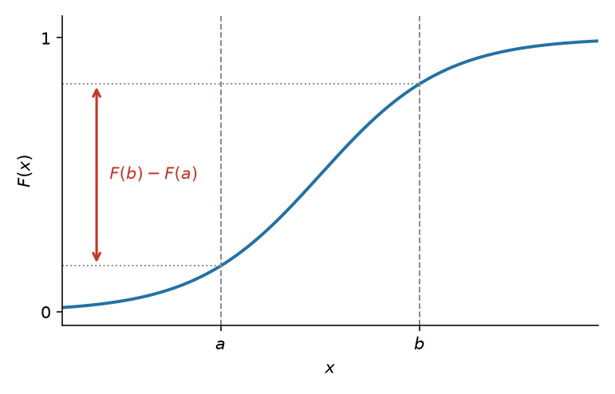
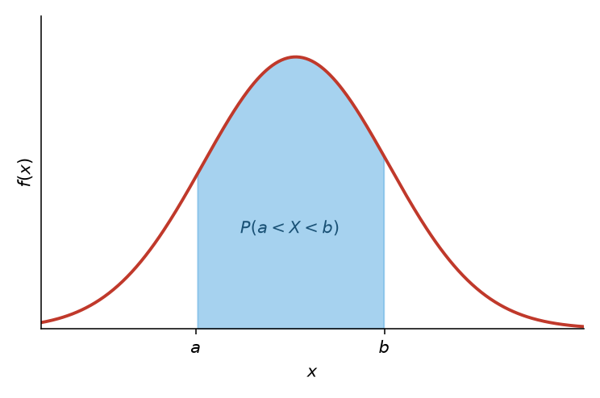
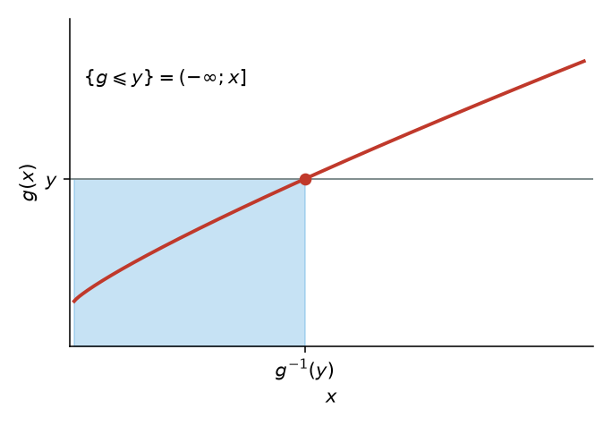
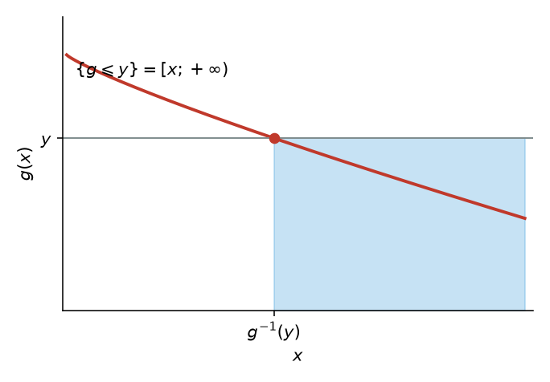
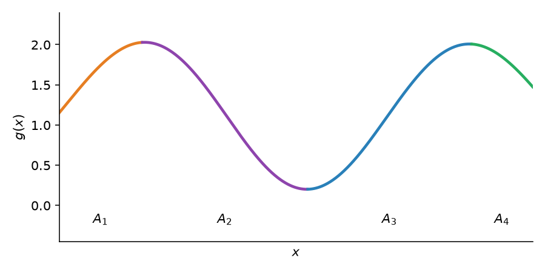
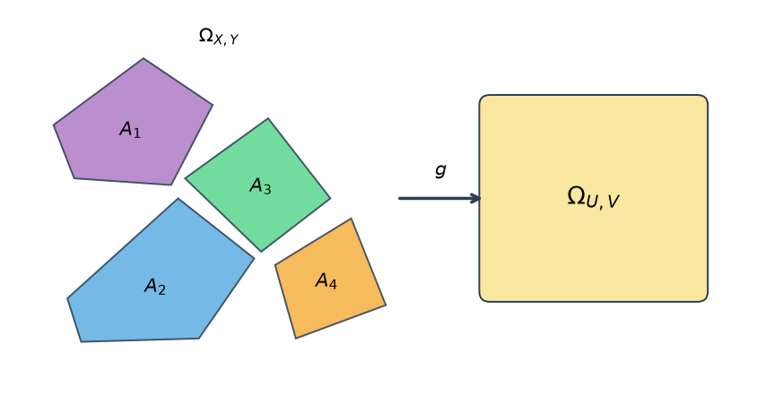

Практика 7. Непрерывные СВ и преобразования¶
Функции распределения и плотности¶
На доску
Функцией распределения называют функцию \(F(x)\), определяющую для каждого значения \(x\) вероятность того, что случайная величина \(X\) примет значение, меньшее \(x\),
На доску
Свойство 1. Значения функции распределения принадлежат отрезку \([0; 1]\):
На доску
Свойство 2. Функция распределения есть неубывающая функция:
На доску
Следствие 1. Вероятность того, что случайная величина \(X\) примет значение, заключенное в интервале \((a, b)\), равна приращению функции распределения на этом интервале:

На доску
Следствие 2. Вероятность того, что непрерывная случайная величина \(X\) примет одно определенное значение, например \(x_1\), равна нулю:
На доску
Свойство 3. Если все возможные значения случайной величины \(X\) принадлежат интервалу \((a, b)\), то
На доску
Следствие. Справедливы следующие предельные соотношения:
На доску
Свойство 4. Функция распределения непрерывна слева:
На доску
В современных курсах чаще пишут \(F(x)=P(X\leqslant x)\) и непрерывность справа. Здесь — формулировка с \(P(X<x)\), как в задачниках.
Плотность¶
На доску
Плотностью распределения вероятностей непрерывной случайной величины называют первую производную от функции распределения: \(f(x) = F'(x)\).
На доску
Вероятность того, что непрерывная случайная величина \(X\) примет значение, принадлежащее интервалу \((a, b)\), определяется равенством

На доску
Зная плотность распределения, можно найти функцию распределения
На доску
Свойство 1. Плотность распределения неотрицательна, т. е. \(f(x) \geqslant 0\).
На доску
Свойство 2. Несобственный интеграл от плотности распределения в пределах от \(-\infty\) до \(\infty\) равен единице: \(\int_{-\infty}^{\infty} f(x)\, dx = 1\).
На доску
В частности, если все возможные значения случайной величины принадлежат интервалу \((a, b)\), то \(\int_a^b f(x)\, dx = 1\).
Преобразование одномерной СВ¶
На доску
Пусть \(X \sim f_X(x)\) — непрерывная случайная величина с носителем \(\mathcal{X}\). Пусть случайная величина \(Y\) задана через преобразование \(Y = g(X)\). Тогда \(Y\) имеет функцию распределения
На доску
Дальше есть два пути: посчитать напрямую по этой формуле или разбить на монотонно возрастающие/убывающие интервалы, чтобы взять обратную функцию.
Строго монотонные преобразования¶
На доску
Пусть \(X \sim F_X(x)\) и \(Y = g(X)\), где \(g(x)\) является строго монотонным преобразованием. Тогда
- \(g\) возрастает на \(\mathcal{X}\) \(\implies\) \(F_Y(y) = F_X\bigl(g^{-1}(y)\bigr)\), \(y \in \mathcal{Y}\);
- \(g\) убывает на \(\mathcal{X}\) и \(X\) является непрерывной \(\implies\) \(F_Y(y) = 1 - F_X\bigl(g^{-1}(y)\bigr)\), \(y \in \mathcal{Y}\).


На доску
Диффеоморфизмом называется такая биективная функция \(g(x)\), обратная \(g^{-1}(y)\) которой является непрерывно дифференцируемой.
На доску
Пусть \(X \sim f_X(x)\) является непрерывной случайной величиной и \(Y = g(X)\), где \(g\) является диффеоморфизмом и строго монотонной функцией. Тогда плотность вероятности \(Y\) имеет вид
На доску
где \(\mathcal{Y}\) — носитель распределения \(Y\).
На доску
Модуль производной — якобиан в одномерии: сжимаете ось \(x\) в \(y\), плотность пересчитывается.
Немонотонные преобразования¶
На доску
Пусть \(X \sim f_X(x)\) и \(Y = g(X)\). Пусть существует такое разбиение \(A_0, A_1, \dots, A_k\) для носителя \(\mathcal{X}\) случайной величины \(X\), что \(f_X(x)\) непрерывна на всех \(A_i\) и \(P(X \in A_0) = 0\). Пусть существуют функции \(g_1(x), \dots, g_k(x)\), определенные на \(A_1, \dots, A_k\) соответственно и удовлетворяющие условиям:
- \(g(x) = g_i(x)\), \(x \in A_i\);
- множество \(\mathcal{Y} = \{ y : y = g_i(x) \text{ для } x \in A_i \}\) одинаково для каждого \(i = 1, \dots, k\);
- \(g_i(x)\), как отображение из \(A_i\) в \(\mathcal{Y}\), является диффеоморфизмом.
На доску
Тогда плотность вероятности \(Y\) имеет вид:
На доску
На графике куски \(g_{i-1}\), \(g_i\), \(g_{i+1}\) живут на \(A_{i-1}\), \(A_i\), \(A_{i+1}\).

Многомерные преобразования¶
На доску
Одномерная случайная величина: \(X \sim f_X\), диффеоморфизм \(Y = g(X)\), плотность
На доску
Двумерная случайная величина: \((X, Y) \sim f_{X,Y}\), диффеоморфизм \(U = g_1(X, Y)\), \(V = g_2(X, Y)\). Обратные отображения: \(X = h_1(U, V)\) и \(Y = h_2(U, V)\). Плотность
На доску
В многомерном случае производная обратной функции заменяется на якобиан:
На доску
где \(J \ne 0\) и \((u, v) \in \Omega_{U,V}\).
На доску
Небиективное преобразование: разбиение \(A_0, A_1, \dots, A_k \subset \Omega_{X,Y}\),
- \(P\bigl((X, Y) \in A_0\bigr) = 0\);
- для \(A_i\) дан диффеоморфизм \((U, V) = \bigl(g_{1i}(X, Y), g_{2i}(X, Y)\bigr)\), отображающий \(A_i\) в \(\Omega_{U,V}\);
- обратное преобразование: \((X, Y) = \bigl(h_{1i}(U, V), h_{2i}(U, V)\bigr)\).

На доску
где
На доску
Сумма — преобразование \((x, y) \to (x + y, y)\): \(u = x + y\), \(v = y\), якобиан равен 1, обратное \(x = u - v\), \(y = v\),
На доску
Если \(X\) и \(Y\) независимы, совместная плотность равна произведению. Маргинал по \(v\) даёт плотность суммы: